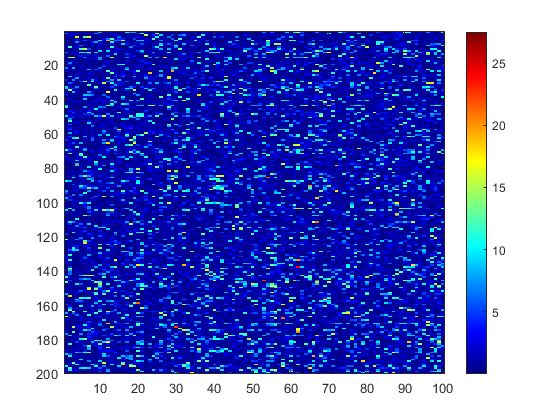

This demo evaluates the performance of Algorithm 1 in a bipartite graph with four IGDBs
Contents
Generate a bipartite graph with four IGDBs
k=60; % case+control q1=0.8;q2=0.1; mu0=0;mu1=1;sigma=1; delta=(mu1-mu0)/sigma*sqrt(k/4); N = 200; M = 100; n1 = 30; m1 = 20; n2 = 20; m2=20; n3 = 15; m3=15; n4 = 15; m4=15; G = zeros(N,M); G(1:n1,1:m1) = ones(n1,m1); G((n1+1):(n1+n2),(m1+1):(m1+m2)) = ones(n2,m2); G((n1+n2+1):(n1+n2+n3),(m1+m2+1):(m1+m2+m3)) = ones(n3,m3); G((n1+n2+n3+1):(n1+n2+n3+n4),(m1+m2+m3+1):(m1+m2+m3+m4)) = ones(n4,m4); true_edge = G(:); false_edge = 1-true_edge; W_vec=trnd(k-2,N*M,1); idx_true_edge = find(true_edge); idx_false_edge = find(false_edge); sample_idx_true = datasample(idx_true_edge,floor(q1*sum(true_edge)),'Replace',false); sample_idx_false = datasample(idx_false_edge,ceil(q2*sum(false_edge)),'Replace',false); W_vec(sample_idx_true) = nctrnd(k-2,delta,size(sample_idx_true)); W_vec(sample_idx_false) = nctrnd(k-2,delta,size(sample_idx_false)); W_n = reshape(W_vec,N,M); p=2*tcdf(-abs(W_n),k-2); logP=-log(p); W_org=logP; figure;imagesc(W_org);colormap jet;colorbar;
Permute nodes
perm_matrix = reshape((1:N*M),N,M);
row_perm_idx = randperm(N);
col_perm_idx = randperm(M);
perm_matrix = perm_matrix(row_perm_idx,col_perm_idx);
perm_vec = perm_matrix(:);
[result ID]=sort(perm_vec);
W_vec = W_org(:);
W1_vec = W_vec(perm_vec);
W1 = reshape(W1_vec,N,M);
figure;imagesc(W1);colormap jet;colorbar;
 Detect the first IGDB
Detect the IGDB
c_vec0 = 0.1:0.1:5; r=-log(0.05); lambda_vec0 = 1:0.05:2; [s_rev,t_rev, c_rev, lambda_rev]=greedy_lik(W1,c_vec0,lambda_vec0,r,20); s_in = setdiff(1:N,s_rev); t_in = setdiff(1:M,t_rev); figure;imagesc(W1(s_in,t_in));colormap jet;colorbar; figure;imagesc(W1([s_in sort(s_rev)],[t_in sort(t_rev)]));colormap jet;colorbar;
Remove the detected subgraph and refill with mean
W_vec = W1(:); p = sum(W_vec>r)/size(W_vec,1); W_vec = W_vec(W_vec>r); mean_W = mean(W_vec); a = binornd(1,p*ones(1,size(s_in,2)*size(t_in,2))); input_vec = mean_W*a; input_clu = reshape(input_vec,[size(s_in,2) size(t_in,2)]); W2 = W1; W2(s_in,t_in) = input_clu; figure;imagesc(W2([s_in sort(s_rev)],[t_in sort(t_rev)]));colormap jet;colorbar; %figure;imagesc(W2);colormap jet;colorbar;

Detect the second IGDB
Repeat IGDB detection
[s_rev2,t_rev2, c_rev2, lambda_rev2]=greedy_lik(W2,c_vec0,lambda_vec0,r,20); s_in2 = setdiff(1:N,s_rev2); t_in2 = setdiff(1:M,t_rev2); figure;imagesc(W2(s_in2,t_in2));colormap jet;colorbar; figure;imagesc(W2([s_in2 sort(s_rev2)],[t_in2 sort(t_rev2)]));colormap jet;colorbar;
Remove the detected subgraph and refill with mean
a = binornd(1,p*ones(1,size(s_in2,2)*size(t_in2,2))); input_vec = mean_W*a; input_clu = reshape(input_vec,[size(s_in2,2) size(t_in2,2)]); W3 = W2; W3(s_in2,t_in2) = input_clu; figure;imagesc(W3([s_in2 sort(s_rev2)],[t_in2 sort(t_rev2)]));colormap jet;colorbar; %figure;imagesc(W2);colormap jet;colorbar;
Detect the third IGDB
Repeat IGDB detection
[s_rev3,t_rev3, c_rev3, lambda_rev3]=greedy_lik(W3,c_vec0,lambda_vec0,r,20); s_in3 = setdiff(1:N,s_rev3); t_in3 = setdiff(1:M,t_rev3); figure;imagesc(W3(s_in3,t_in3));colormap jet;colorbar; figure;imagesc(W3([s_in3 sort(s_rev3)],[t_in3 sort(t_rev3)]));colormap jet;colorbar;
Remove the detected subgraph and refill with mean
a = binornd(1,p*ones(1,size(s_in3,2)*size(t_in3,2))); input_vec = mean_W*a; input_clu = reshape(input_vec,[size(s_in3,2) size(t_in3,2)]); W4 = W3; W4(s_in3,t_in3) = input_clu; figure;imagesc(W4([s_in3 sort(s_rev3)],[t_in3 sort(t_rev3)]));colormap jet;colorbar; %figure;imagesc(W2);colormap jet;colorbar;
Detect the fourth IGDB
Repeat IGDB detection
[s_rev4,t_rev4, c_rev4, lambda_rev4]=greedy_lik(W4,c_vec0,lambda_vec0,r,20); s_in4 = setdiff(1:N,s_rev4); t_in4 = setdiff(1:M,t_rev4); figure;imagesc(W3(s_in4,t_in4));colormap jet;colorbar; figure;imagesc(W3([s_in4 sort(s_rev4)],[t_in4 sort(t_rev4)]));colormap jet;colorbar;
Display full detected structure
s_left = setdiff(1:N,[s_in s_in2 s_in3 s_in4]);
t_left = setdiff(1:M,[t_in t_in2 t_in3 t_in4]);
figure;imagesc(W1([s_in s_in2 s_in3 s_in4 sort(s_left)],[t_in t_in2 t_in3 t_in4 sort(t_left)]));colormap jet;colorbar;